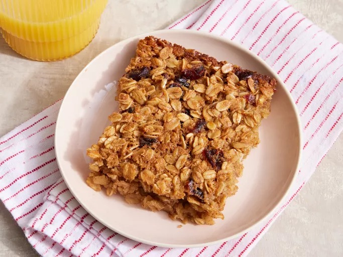

Baked Oatmeal

This baked oatmeal recipe hails from Pennsylvania Amish country. Everyone who tries it loves it!
Serve this comforting dish topped with milk.
The recipe is highly adaptable. Use whatever fruit you'd like (even better if you use seasonal fruits!)
You could also change up the nuts and spices.
Ingredients
- 3 cups rolled oats
- cup brown sugar
- 2 teaspoons ground cinnamon
- 2 teaspoons baking powder
- 1 teaspoon salt
- 2 eggs
- 1 cup milk
- ½ cup melted butter
- 2 teaspoons vanilla extract
- ¾ cup dried cranberries
Steps
- Gather all ingredients. Preheat the oven to 350 degrees F (175 degrees C).
- Mix together oats, brown sugar, cinnamon, baking powder, and salt in a large bowl.
- Beat in eggs, milk, melted butter, and vanilla extract. Stir in dried cranberries.
- Spread into a 9x13-inch baking dish.
- Bake in the preheated oven until top is golden, about 40 minutes. Serve and enjoy!